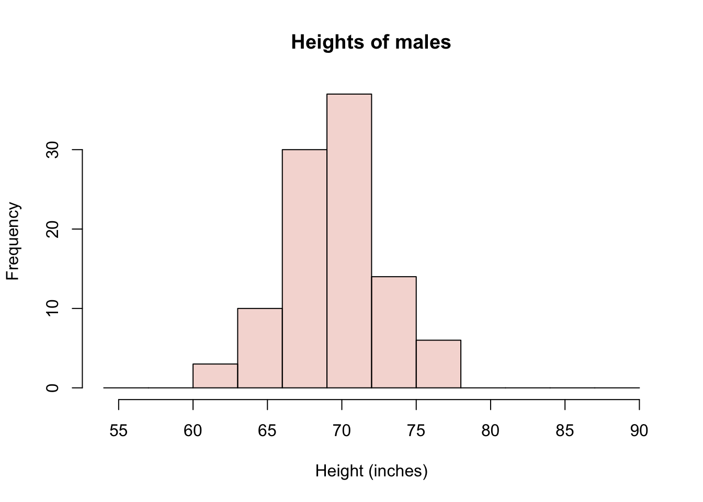
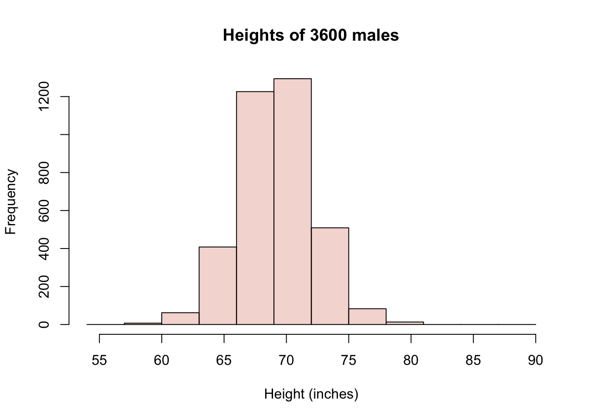
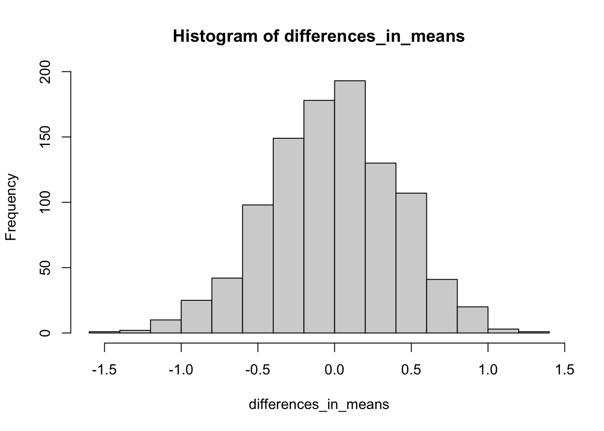

- Preface
- How Many Kinds of People Are There?
- 1 Categories, counts, and kinds
- 2 Dimensions
- 3 Tests of independence: A first look starring alternate universes
- 4 (An Infinite Number of) Shades of Gray (or Brown)
- 5 Cut Scores and Abnormality
- 6 The Modal American
- 7 Sixteen Personalities or Five Factors?
- 8 When and How Will You Die?
- 9 Conditional Death
- 10 Some facts about Probabilities
- 11 How You Will Die: Causes or Conditions?
- Will You Make Money?
- 12 Betting on Beer (or Ice Cream)
- 13 Expected Value
- Is the System Fair?
- 14 Differences in athletics
- 15 NYC COVID-19 Data
- Appendix
- A Randomness
- References
Are professional basketball players taller?
Let’s start with an example to refresh your memory about sampling and differences. We’ll walk through this example very naively on purpose. Suppose we take 100 NBA basketball players as a sample (of all basketball players) and 100 NYU students as another sample (of NYU students), and now we look at the distribution of heights in each of our samples. We’ll consider male students, since the NBA players are also males. Actually, I don’t have any data on NYU student heights. So we’ll just consider all adult males. Conveniently, the openintro R package has a data set called male.heights and another data set called nba.heights. You can load them as follows
And then you can inspect them. For example, one of the first things I will do with a data set is ask how big it is (how many rows and columns) and then look at the first few rows.
## [1] 100 1## heights
## 1 71
## 2 67
## 3 69
## 4 70
## 5 68
## 6 63The male.heights data table has 100 rows and a single column called “heights.” The nba.heights data set is a little different.
## [1] 435 4## last.name first.name h.meters h.in
## 1 Acker Alex 1.96 77
## 2 Adams Hassan 1.93 76
## 3 Afflalo Arron 1.96 77
## 4 Ager Maurice 1.96 77
## 5 Ajinca Alexis 2.13 84
## 6 Aldridge LaMarcus 2.11 83Notice that there are 435 NBA players from the 2008-2009 season here. We have their first and last names as well as their heights in units of meters and also inches. I’d like to make a comparison between similarly sized samples. So I will just take a subsample of 100 NBA players. I can do this easily using the sample() function.
# sample 100 values at random from the nba heights in inches
nbaHeights <- sample(nba.heights$h.in, 100)
# rename the male height to match
maleHeights <- male.heights$heightsNote that because I did not use a set.seed in the code above, I have no idea which 100 NBA players I got. In fact, every time I (or you) run this, I (or you) will get a different sample! Finally, I would like to compare the distributions of heights for these two samples. For which our old friend the histogram is just what the doctor ordered.
# defining some colors and bin-breaks to standardize my plots
malescol <- rgb(0.8,0.2,0,0.2)
nbacol <- rgb(0,0.3,0.8,0.2)
mybreaks <- seq(54,90,3)
# plot a histogram showing both height distributions, separately
hist(maleHeights, col=malescol, breaks=mybreaks,
main="Heights of males", xlab="Height (inches)")
hist(nbaHeights, col=nbacol, breaks=mybreaks,
main="Heights of NBA players", xlab="Height (inches)")
# plot a histogram showing both height distributions, together (add=T)
hist(maleHeights, col=malescol, breaks=mybreaks,
main="", xlab="Height (inches)")
hist(nbaHeights, col=nbacol, breaks=mybreaks, add=T)
legend("topleft", c("non-NBA", "NBA"), fill = c(malescol, nbacol))
Figure 14.1: Histogram of NBA and non-NBA male heights on one plot using transparent colors
I have shown three histograms, one with only the males dataset, one with only the NBA data set, and one showing both groups at the same time. I’ve made the colors in R slightly transparent, so that both distributions are visible at the same time. But it is very important to recognize that in Figure 14.1, we are seeing an overlap region of two distributions, not three distributions shown with “stacked bars.” You sometimes see stacked barplots, where the height of the bar is the total count, and the colors represent contributions to the total from different groups. For example, units sold in the USA and units sold abroad = total units sold. Here, you don’t see the total. You would have to estimate it by mentally adding up the full heights of each bar. So, for example, the total number (out of 200) of males in the height range of 72-75 inches would be 14 from the males data set plus 17 from the NBA dataset.
I doubt any of you reading this are surprised to see that there is a big difference in these distributions; that NBA players are, on average, 9 or 10 inches taller than the (average) males. For the particular subsample I’ve drawn, the difference happens to be exactly 9.5 inches.
Now that you are somewhat conversant with sampling variation, you might wonder: what are the chances of a difference in sample heights like this occuring by chance? After all, if we had a large group of males to begin with, and we sampled from them two different times, we would not expect the averages of the two samples to be identical. We will probably get a taller sample and a shorter sample, right? But how much taller?
You can actually simulate and/or calculate an answer to these questions. Which of the following would you need to know in order to estimate the chances of a large difference in height occuring by chance?
- Group sample means (averages)
- Group sample variances (a measure of spread)
- Sample size of groups
- 1 & 2 only
- 2 & 3 only
- 1 & 3 only
- 1, 2, & 3
Answer.11
We can go to the National Center for Health Statistics website to retrieve a larger census of male heights. (You can find Body Measures in the National Health and Nutrition Examination Survey conducted every two years.) Conveniently (again) someone has even made an R package to save you the time (NHANES). The data set includes females as well as children, so I will filter those out. Here is a distribution of roughly 3600 males.
library(NHANES) #
library(dplyr)
lotsoheights <- NHANES %>% filter(Gender == "male" & Age > 18) %>%
select(Height) %>% unlist() %>% na.omit()
# convert cm to in
lotsoheights <- as.numeric(lotsoheights) / 2.54
# plot as before
hist(lotsoheights, col=malescol, breaks=mybreaks,
main="Heights of 3600 males", xlab="Height (inches)")
Now consider a process of sub-sampling from this larger sample repeatedly. That is, we take two samples of 100 and compare the difference in the sample averages. Let’s say we do it 1000 times. How often do we see differences as extreme as 9 inches? Mind you, we have no idea which of our two samples will turn out taller, so we’ll need to look for differences with magnitude (or absolute value) greater than 9. Because the difference could be 9.5 or -9.5 depending on the order of subtraction. Here goes:
numSamples <- 1000
sampleSize <- 100
differences_in_means <- c()
for (i in 1:numSamples) {
sample1 <- sample(lotsoheights, sampleSize)
sample2 <- sample(lotsoheights, sampleSize)
differences_in_means <- c(differences_in_means, mean(sample1) - mean(sample2))
}
hist(differences_in_means)
You’ll notice that in 1000 experiments, we never observed a difference in mean heights between our two samples of even 2 inches, let alone 9 inches. Here is how you would know for sure
# declare a threshold difference of interest
thresholdDiff <- 9
# compute percentage of events outside of this threshold
numExtreme <- length(which(abs(differences_in_means) > thresholdDiff))
percentExtreme <- numExtreme/numSamples * 100
paste0(percentExtreme,"%")## [1] "0%"In short, it seems highly implausible that this difference would occur by chance.
Exercise: modify the code to use samples of 10 instead of 100. Do you observe bigger differences? And if so, are they big enough to explain the NBA difference?
Exercise: Experiment with changing the threshold difference. Using the original sample size of 100, how often are differences greater than 1 inch? Where should the threshold be set so that a difference at least as large as this threshold is expected to occur roughly 25% of the time?
None of this is surprising
Okay, so suppose we accept that NBA players are systematically taller. Could it be that the NBA makes people taller? Perhaps there is special practice or vitamin supplement that NBA players use that causes them to grow 9-10 inches? Well, we could rule this out if, for example, we examined the heights of NBA players just BEFORE they became NBA players. If we did that, we would see that they were already tall.
Another possibility, then, is that NBA players are selected for being tall. The question we might now ask, though, is: is that fair? We’re saying that short people have a low likelihood of being hired as NBA players. (Note that we’re not suggesting that being tall is sufficient to become an NBA player, but it does seem to be necessary). What do you think?
Which of these statements do you most agree with?
- It is not fair; everyone should have an equal chance to play in the NBA
- It is not fair; shorter people, who are exceptionally talented in basketball, should have an equal chance to play in the NBA
- It is fair; tall players perform better because their height provides an advantage in the game of basketball
- It is fair; tall players look better on the court than short players, and the NBA has to sell tickets.
- It is neither fair nor unfair; it just is.
It may be possible to defend different answers to this particular question of fairness, but most of us can agree that professional sports are, by design, selective on performance. In a game like basketball, height provides an advantage which, along with athleticism (strength, speed, stamina, etc.), makes a player perform better.
In summary, we have observed a difference between groups. NBA players are taller than non-NBA players. This difference does not appear to be consistent with random chance. Indeed, we probably knew enough about basketball to explain the difference in terms of selection for competitive advantage. But, importantly, it is up to us to decide whether selecting players for competitive advantage—even if it means that we effectively discriminate against short athletes—is fair.
The answer is D. Here’s why you need each quantity. Sample means. Clearly, if the sample means are very close, you are more likely to accept the possibility that the difference occurred by chance than if they are very different, so sample means are necessary. On the heels of that, the notion of “close” values of the means is itself dependent on the range of values we expect (i.e., on the variance or spread). Two buildings are close in height if one is 271 ft tall and another is 274 ft tall. But a difference of 3 feet among human beings is enormous. It’s enormous relative to the standard deviation, which for adult human beings is about 4 inches. The standard deviation for building heights is over 200 ft if we include skyscrapers. Finally, the sample size. The law of large numbers tells us that the sample mean gets closer to the population mean as the sample size increases. However, when the sample size is small, we will have more sampling variance. Intuitively, we can think about it this way: Let’s suppose the distributions are different but not so different that they don’t overlap. If we sample only two people from each population, we may get two tall people by chance from one (or short ones from the other) in such a way that the means are close by chance. But if we have small differences in means with large samples (say, 1000), then we believe that the means are, in fact, close or even equal.↩